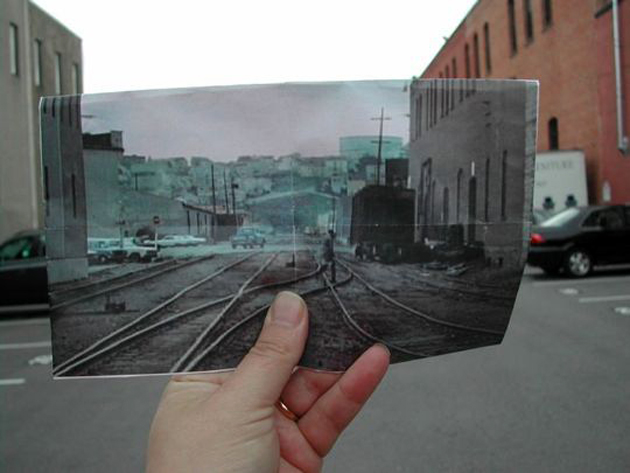
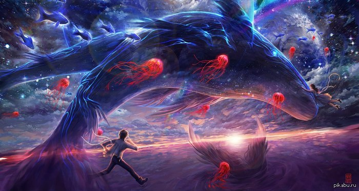

Все статьи
Дежавю
Сегодня мы расскажем вам об одном из самых загадочных явлений, которым порой поражает нас наш собственный мозг — так называемом эффекте дежавю. Много домыслов, предположений и догадок витают вокруг этого странного ощущения, но мы познакомим вас с некоторыми из наиболее научно обоснованных вариантов и постараемся понять, почему возникает дежавю.
Сон с научной точки зрения
Каждый из живущих на Земле человек задумывался, что такое сон и как он возникает в голове. Парадоксально, но сколько бы времени ученые не тратили на изучение данного явления, понять этот сложное явление до конца так никому и не удалось. Как растолковать собственный сон, определяет не книга, а сам человек.
Психология страха
Страх – это чувство, через которое в своей жизни неоднократно проходил каждый человек. Все люди, всех возрастов и национальностей, когда-либо испытывали страхи. Страх может убить, а может и спасти. Страх может помочь, а может и привести в отчаяние. Что такое страх с точки зрения психологии?
Раньше было лучше?
Ностальгия (от др.-греч. νόστος — возвращение на родину и άλγος — боль, печаль ) – грусть о прошедших временах, местах или событиях, с которыми связаны приятные воспоминания. Она часто возникает при удалении, пространственном (эмиграция), или временном (взрослые люди вспоминают о своем детстве как о «золотой» поре жизни). Интенсивность переживаний варьируется от легкой грусти (например, о «старых добрых временах») до клинических симптомов в виде бессонницы, отсутствия аппетита и навязчивого желания попасть в заветное место.